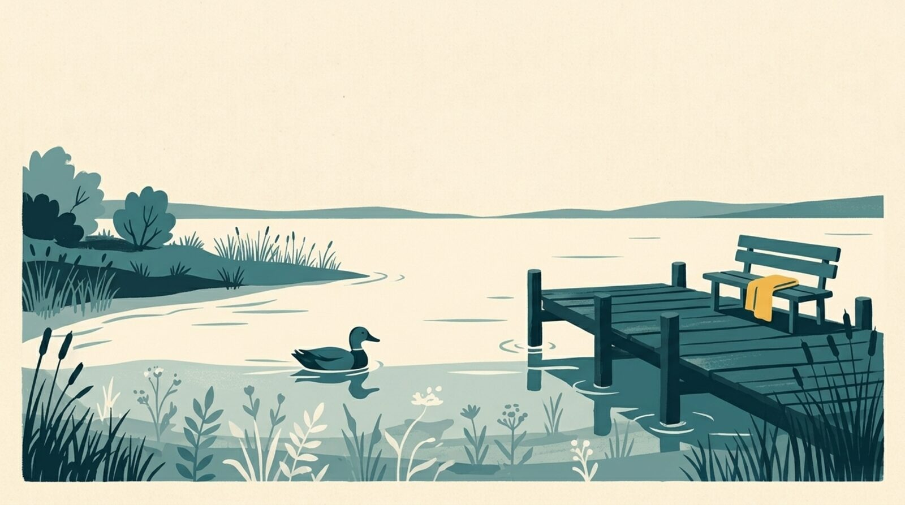

Kurz gesagt
«Entenflöhe» sind Larven von Wasservogel-Parasiten (Zerkarien), die unter die Haut von Badenden eindringen und einen allergischen Ausschlag auslösen können. Er ist in der Regel harmlos, kann über eine Woche dauern und ist nicht ansteckend. Risiko senken: nach dem Baden sofort kräftig abtrocknen und duschen, warme, flache, pflanzenreiche Gewässer meiden.
Was ist das?
Laut Merkblatt des Bundesamts für Gesundheit (BAG) ist die Badedermatitis oder Zerkariendermatitis ein allergischer Hautausschlag, ausgelöst durch Parasiten von Vögeln (in der Schweiz vor allem Enten) oder Wassersäugetieren. Ihre Larven befallen Wasserschnecken, die sie ins Wasser abgeben. Manchmal dringen sie, statt einen Vogel zu befallen, unter die Haut von Badenden ein: Sie können sich dort nicht entwickeln und sterben rasch, doch die allergische Reaktion wird ausgelöst.
Welche Symptome?
Kribbeln, Brennen und Juckreiz, die wenige Minuten bis wenige Tage nach dem Baden auftreten können; kleine rote Bläschen innert 12 Stunden, manchmal kleine Blasen. Kratzen kann eine bakterielle Infektion auslösen. Die Reizungen können über eine Woche dauern; laut Kanton Genf dauern sie selten bis zu einem Monat. In der Regel keine ernste Gesundheitsgefahr.
Was tun?
- Nicht kratzen.
- Kalte Kompressen auflegen (BAG, Genf).
- Eine Apothekerin oder ein Apotheker kann ein Gel oder eine Lotion gegen die Reizung empfehlen; das BAG nennt auch eine rezeptfreie Kortikosteroid-Creme und bei starkem Juckreiz orale Antihistaminika.
- Bei sehr heftigen Symptomen (Schwindel, Schwitzen, Fieber, Übelkeit) laut BAG, oder wenn die Symptome laut Genf länger als einen Monat anhalten, zum Arzt.
Wie senkt man das Risiko?
- Nach dem Baden duschen, sofort und kräftig mit einem Tuch abtrocknen (BAG, Genf). Kinder sind stärker betroffen, weil sie im flachen Wasser bleiben und sich weniger abtrocknen.
- Lange Aufenthalte in warmem, flachem, pflanzenreichem Wasser vermeiden; gute Schwimmerinnen und Schwimmer können tieferes, kälteres Wasser vorziehen (Genf).
- Gebiete mit Warnungen meiden (BAG).
Nichts hier ersetzt einen Erste-Hilfe-Kurs oder den Rat einer Ärztin oder eines Arztes. Wasser und Wind von heute, Badeplatz für Badeplatz, stehen in der App Mein See.
Das Wasser des Sees im Moment
Die Wassertemperatur jedes Badeplatzes steht in der App Mein See, alle drei Stunden aktualisiert.
Hinweis. Dieser Artikel gibt allgemeine Informationen aus den genannten Quellen wieder; er ersetzt keinen ärztlichen Rat. Baden in kaltem Wasser belastet das Herz stark und kann gefährlich sein: Lass dich vor dem Beginn von einer Ärztin oder einem Arzt beraten, besonders bei Herzproblemen, Bluthochdruck oder Schwangerschaft. Geh nie allein ins Wasser und befolge die Anweisungen der Rettungsschwimmer. Du badest auf eigene Verantwortung; im Notfall wähle in der Schweiz die 144 oder die 112.